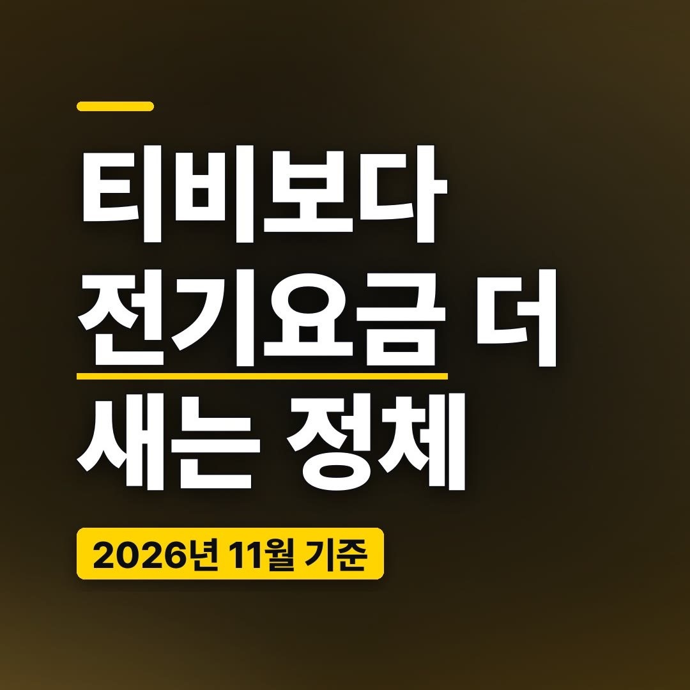
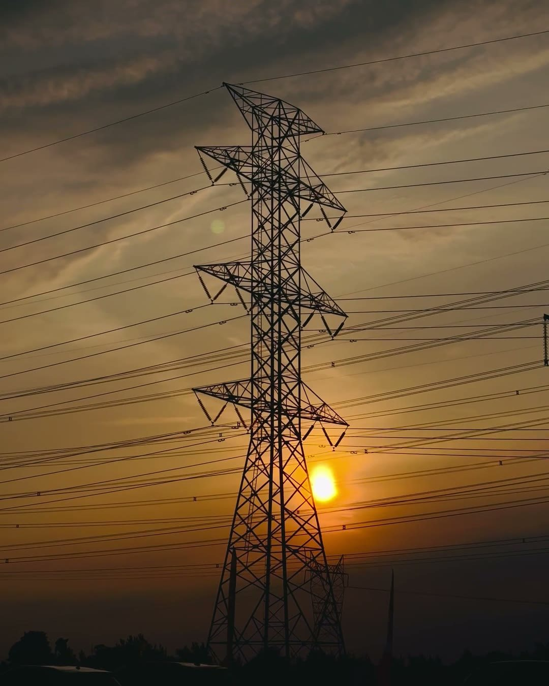
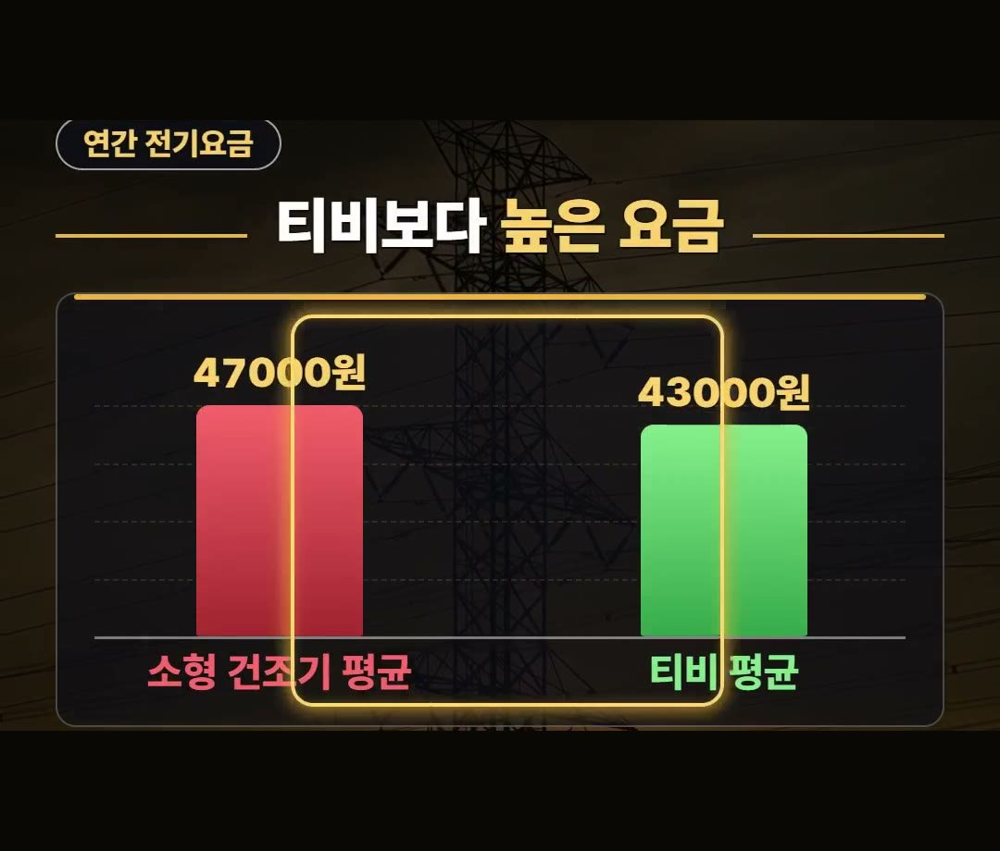
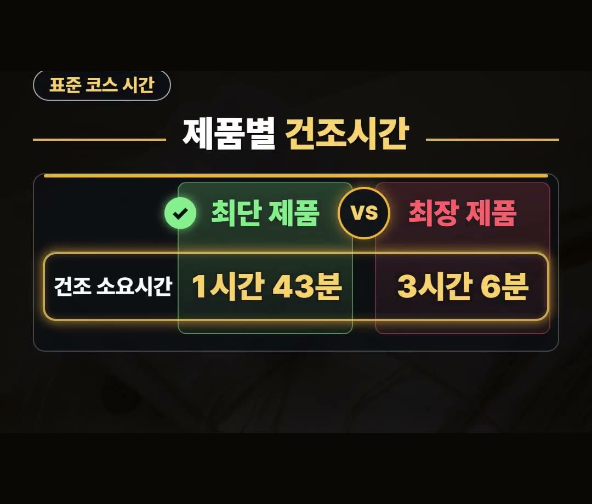
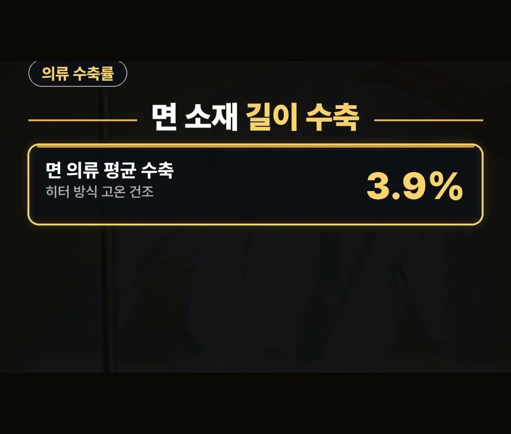
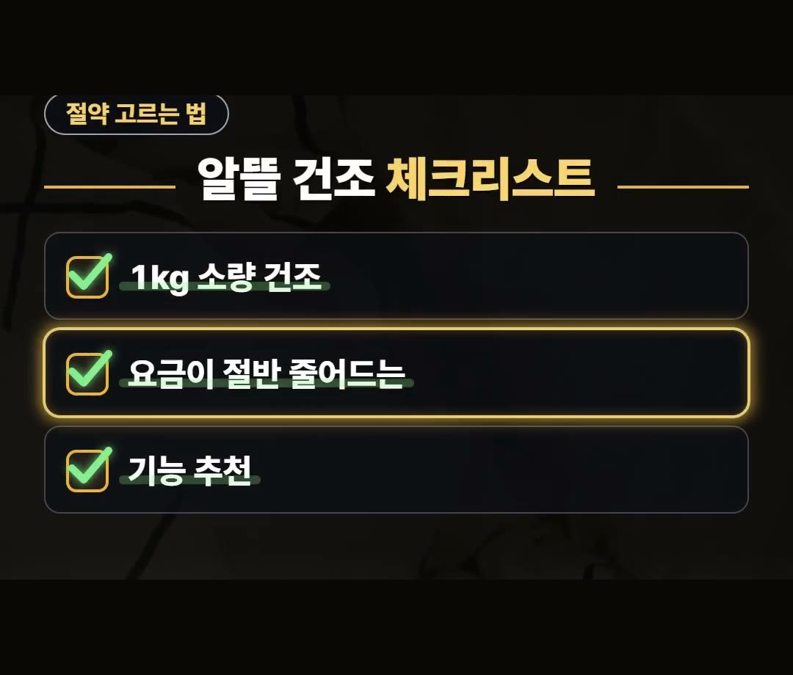

미니 건조기 단점 2023년 소비자원 시험에서 본 전기요금·건조시간·수축
※ 이 글에는 제휴 링크가 포함되어 있으며, 링크를 통해 구매하시면 일정 수수료를 받을 수 있습니다. (가격은 같습니다)
※ 이 포스팅은 쿠팡 파트너스 활동의 일환으로, 이에 따른 일정액의 수수료를 제공받습니다.
요즘 빨래가 잘 안 말라서 작은 건조기를 알아보고 계신가요?
크기가 작으니 전기요금도 적게 나올 것 같지만, 2023년 한국소비자원 소형 의류건조기 시험평가에서는 조금 다른 숫자가 나왔어요.
이 글에서는 미니 건조기 단점으로 짚어 볼 만한 전기요금·건조시간·옷감 수축 숫자와, 고를 때 볼 점을 차분히 정리해 드릴게요.
돈 아끼는 연구소의 아낌 소장이에요.
2023년 한국소비자원 소형 의류건조기 시험평가에서 연간 전기요금은 평균 47,000원, 티비 평균은 43,000원이었어요.
사기 전에 이 두 숫자를 먼저 기억하세요! 💡

미니 건조기 단점, 2023년 시험평가에서 본 것
이 글의 숫자는 2023년 한국소비자원 소형 의류건조기 시험평가 결과를 바탕으로 했어요.
시험에서 나온 내용 가운데 연간 전기요금, 건조시간, 옷감 수축률, 그리고 자동 조절 기능을 고르는 기준을 골라 정리했습니다.
작다고 해서 모든 면에서 부담이 적다고 단정하기는 어렵다는 점을 숫자로 확인해 보는 글이라고 보시면 돼요.
먼저 "티비보다 전기요금이 더 나온다"는 말이 어디서 나왔는지부터 볼게요.
연간 전기요금, 티비 평균과 비교하면
2023년 한국소비자원 소형 의류건조기 시험평가 기준이에요.
- 소형 건조기 연간 전기요금 평균: 47,000원
- 티비 연간 전기요금 평균: 43,000원
시험에서 소형 건조기의 연간 요금은 평균 47,000원으로, 티비 평균 43,000원보다 높았어요.
이 비교가 미니 건조기 단점으로 자주 거론되는 이유입니다.


다만 평균끼리 비교한 숫자라 제품마다 다를 수 있어요.
또 연간 요금을 어떤 조건으로 계산했는지는 이 글의 정리 자료에 담겨 있지 않아요.
그래서 우리 집 사용량에 그대로 대입하기보다는 "시험에서 이런 비교가 나왔다" 정도로 받아들이시길 권해요.
정확한 계산 조건이 궁금하시면 시험평가 원문을 확인해 보세요.
건조시간은 제품마다 차이가 나요
건조 시간도 제품에 따라 달랐어요.
표준 코스 기준 건조 소요시간은 다음과 같아요.
- 최단 제품: 1시간 43분
- 최장 제품: 3시간 6분

같은 소형 건조기라도 표준 코스를 돌리는 데 걸리는 시간이 1시간 43분부터 3시간 6분까지 벌어졌다는 뜻이에요.
빨래를 하루 중 언제 돌릴지, 한 번에 몇 번 돌릴지 계획할 때 건조시간은 미리 봐 둘 만한 항목입니다.
구매 전에 제품별 건조 소요시간을 비교해 보세요.
면 의류 길이 수축, 고온 건조일 때
옷감 이야기도 빼놓을 수 없어요.
시험평가 결과를 바탕으로 한 내용은 이렇습니다.
- 면 의류 평균 길이 수축: 3.9% (히터 방식 고온 건조 시)

면 의류는 히터 방식으로 고온 건조하면 길이가 평균 3.9% 수축할 수 있어요.
어디까지나 "수축할 수 있다"는 평균 숫자이고, 모든 면 옷이 같은 만큼 줄어든다는 뜻은 아니에요.
그래도 아끼는 면 옷을 건조기에 넣기 전에는 건조 방식과 온도가 어떤지 한 번 살펴보시면 좋겠어요.
고를 때 볼 점, 알뜰 건조 체크리스트
앞의 숫자를 바탕으로 고를 때 볼 점 네 가지를 정리했습니다.
- 1kg 소량 건조 시 요금이 절반 줄어드는 기능이 있는지
- 자동 조절 기능이 있는지
- 표준 코스 건조 소요시간이 얼마인지
- 면 의류를 고온 건조할 때 수축이 걱정되지 않는지

이 가운데 눈에 띄는 건 1kg 소량 건조 시 요금이 절반 줄어드는 기능이에요.
빨래가 적을 때도 큰 용량 기준으로만 돌아가는 제품과 달리, 양에 맞춰 조절되는 기능이 있는지 확인해 볼 만합니다.
어떤 제품이 이런 기능을 갖췄는지는 이 글에서 다루지 않았으니, 제품 사양에서 직접 찾아보세요.
미니 건조기 단점이 걱정된다면 이 체크리스트를 구매 전 확인용으로 써 보셔도 좋아요.
정리
- 2023년 한국소비자원 소형 의류건조기 시험평가에서 연간 전기요금은 평균 47,000원으로, 티비 평균 43,000원보다 높았어요.
- 표준 코스 건조시간은 최단 1시간 43분, 최장 3시간 6분으로 제품마다 차이가 났어요.
- 면 의류는 히터 방식 고온 건조 시 길이가 평균 3.9% 수축할 수 있어요.
링크는 아래에 모아 두었어요.
📌 2026년 11월 기준 정보예요. 가격은 시기에 따라 달라질 수 있어요.
사진·영상: Pexels (KATRIN BOLOVTSOVA, MART PRODUCTION, RDNE Stock project, Ron Lach, Tima Miroshnichenko, iPhone Snaps 🇨🇦)